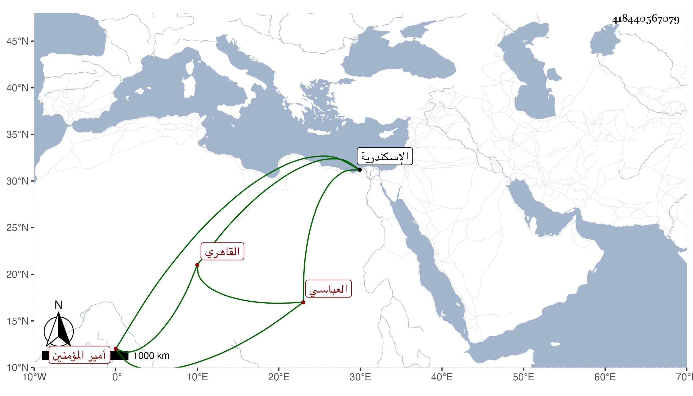

0902Sakhawi.DawLamic.ITO20230111-ara1.EIS1600.418440567079
Biography ID: 418440567079
حمزة بن محمد بن أبي بكر بن أحمد بن سليمان أمير المؤمنين . القائم بأمر الله أبو البقاء بن المتوكل على الله بن المعتصم بالله بن الحاكم بأمر الله بن المستكفي بالله العباسي القاهري نشأ في أيام أبيه ثم أخويه وهو شقيق العباس منهم إلى أن توفي المستكفي سليمان عن غير عهد فاختاره الظاهر جقمق لكونه أسن اخوته ، وولاه في يوم الاثنين خامس المحرم سنة خمس وخمسين واستمر إلى أن كان الركوب على المنصور ، وكان هذا من أكبر قائم عليه وأطلق لسانه في جهته ثم صرح بخلعه غير ملتفت لتقديم والده له فلما تسلطن الأشرف راعي له قيامه معه فزاده عدة أقاطيع وعظمه حتى نال من الوجاهة وقيام الحرمة ما لم ينله أحد من أقربائه في الدولة التركية ، إلى أن كانت ثورة المماليك الظاهرية على السلطان في سلخ جمادى الآخرة سنة تسع وخمسين فوافقهم ، فلم يكن بأسرع من انحلال أمرهم فسقط في يده ورام العود إلى منزله أو الطلوع إلى السلطان فلم يمكن منهما ونزل إليه جماعة فأخذوه فوبخه السلطان ثم أمر بحبسه بقاعة البحرة من الحوش وعزله واستقر بأخيه الجمالي يوسف ووقع الاشهاد بذلك في ثالث رجب منها ولقب بالمستنجد وأرسل بهذا إلى اسكندرية فأقام بها محبوسا ثم مطلقا إلى أن مات في سابع عشر شوال سنة اثنتين وستين بعد تمرضه أياما ، ودفن بها بجانب شقيقه أبي الفضل العباس الذي يقال إنه وجد لم يبل وقد زاد على السبعين ، وكان معتدل القامة أبيض اللحية مدورها ، وفيه فيما قيل حدة مع طيش وخفة ومسكة في لسانه وقد تزوج حواء ابنة السراج الحمصي رحمه الله وعوضه خيرا .
